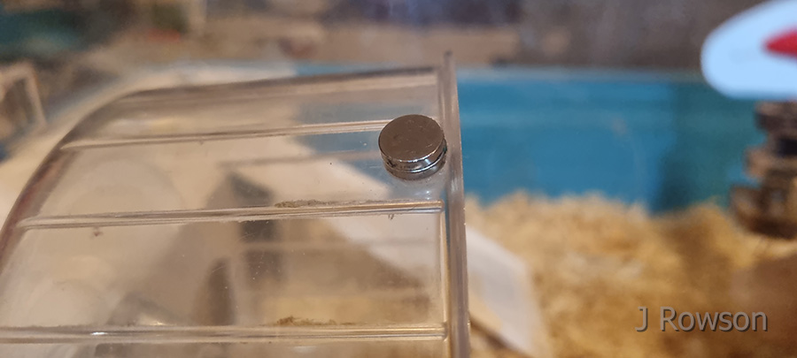
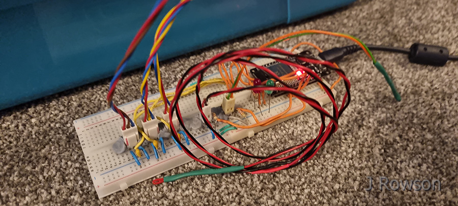
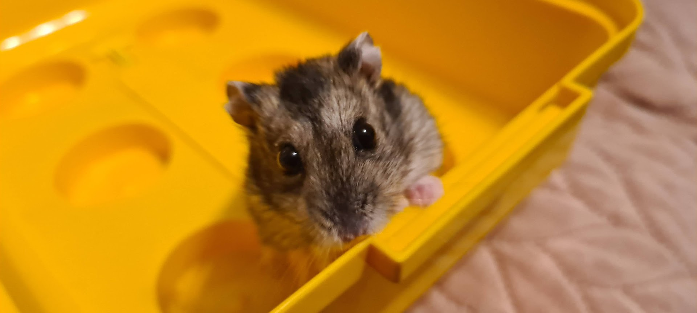
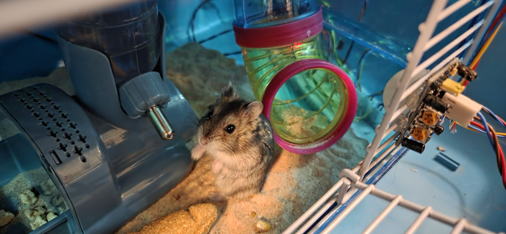
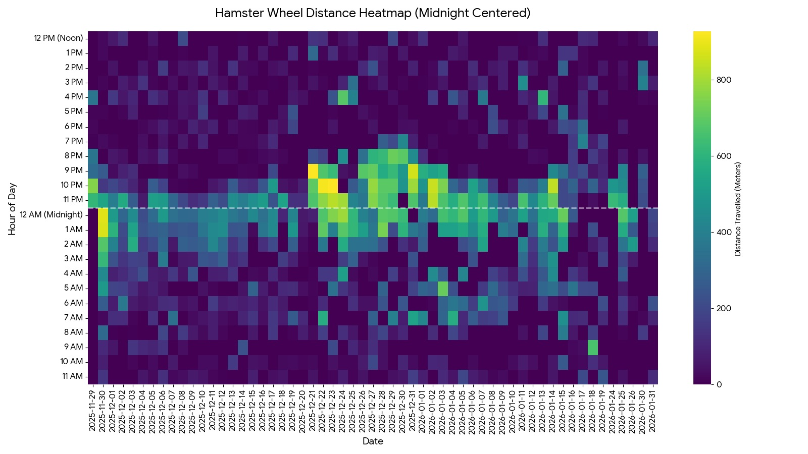
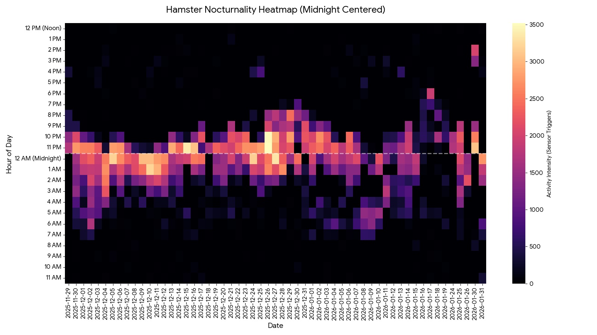
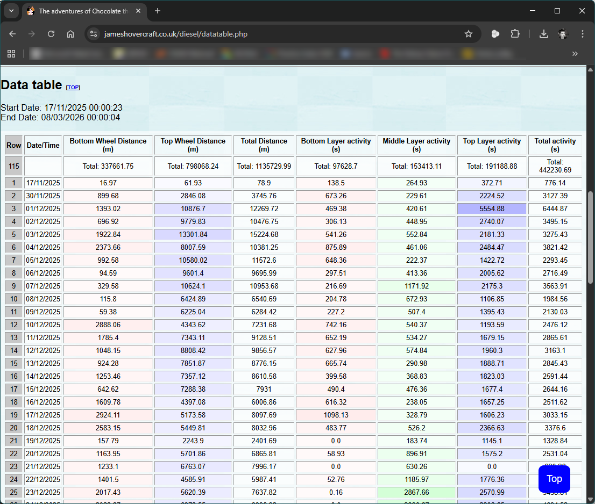
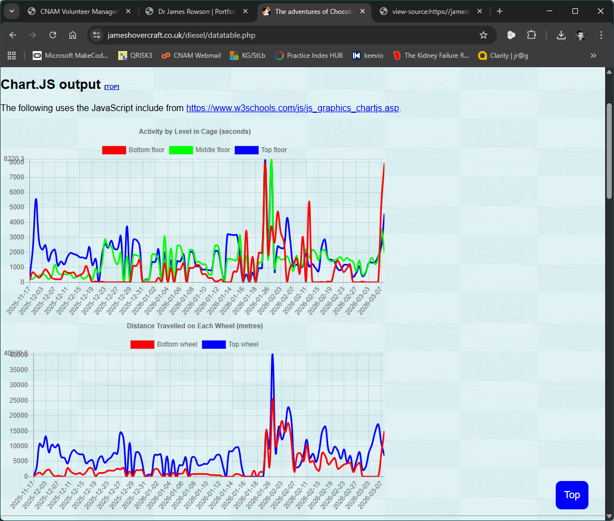

Hamster Activity Logger
That's right, I hear you say, what sort of responsible hamster owner doesn't understand the actions of their hamster! Well, thanks to a very generous donation of gizmos and electronic wizardry from the family of the late Professor of remote sensing, Edward "Ted" Milton 1954-2021 (Obituary within Int. J. Remote Sensing), when my then-6 year-old-son asked me "daddy, how far do you think Diesel runs in a day?" the answer was obviously an ESP32 chip, Raspberry Pi, a fun amount of C++, Python and PHP, and a website was born.
Diesel went on to live a couple of years more, and was replaced (with great ceremony) by his Russian Dwarf Hamster brethren, 'Chocolate', who is far more hyperactive and regularly astounds us at his boundless energy. Apart from the tiny button magnet on his wheels, there is no intrusion of any item into the cage, so as far as the hamster is concerned, his living environments are totally un-touched by anything electronic. It's been a fun and fascinating electronics project and foray into the world of ESP32, API calls, C++ and Python!

Initial attmept at a magnet attached to Diesel's wheel; the actual version is simply one neodymium magnet firmly attached to the wheel, so nothing can get loose or be nibbled.

Extended breadboard plus inputs

Diesel the hamster

Chocolate the hamster

Heatmap of distance travelled vs. hour of day, over the course of several months

Heatmap of time spent active vs. time of day, over the course of several months

Chocolate's activity data over time (tabulated)

Chocolate's activity data over time (graphical)

The new Python-based website for Chocolate the hamster